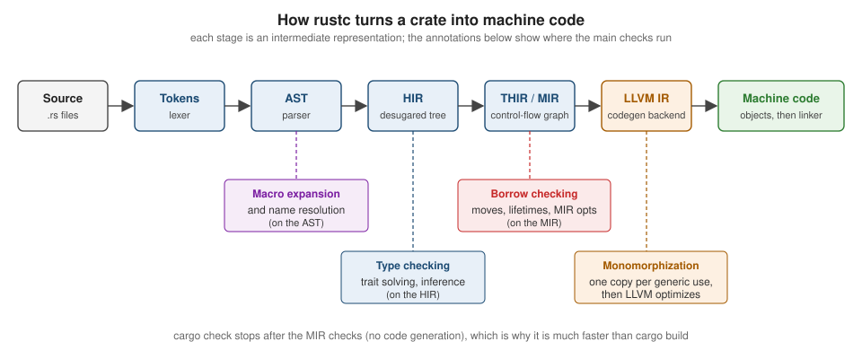

Getting Started
|
This content was generated with the assistance of AI and should be verified against the official documentation before being relied on in production. |
This page is written against Rust 1.99.0 (stable since 2026-10-01) and the 2024 edition, checked on 2026-10-06. It gets a working toolchain onto your machine, compiles a first program by hand and with Cargo, and walks through a small interactive program so that the rest of the section has something concrete to refer to. The next page, Toolchain, rustup & Editions, explains the toolchain in depth.
What Rust is for
Rust is a compiled, statically typed systems programming language. Its defining property is that it gives you the control of C and C++ — values on the stack by default, no garbage collector, no runtime, predictable layout, direct access to the operating system — while ruling out whole classes of memory bugs at compile time: use-after-free, double free, dangling pointers, iterator invalidation and data races. It does this with an ownership system checked by the compiler (see Ownership & Moves) rather than with a runtime collector, so the safety has no run-time cost.
In practice Rust is used for:
| Domain | Typical uses |
|---|---|
Systems software |
operating-system components, drivers, file systems, databases, browsers, virtual machines |
Command-line tools |
fast, single-binary tools such as ripgrep, fd or the Cargo tool itself; see CLI frameworks in Go and Rust for clap and Ratatui |
Network services and backends |
HTTP APIs and proxies on tokio, hyper and axum; see the Axum section |
WebAssembly |
code that runs in the browser or in a WASI host; see WebAssembly |
Embedded |
|
Extending other languages |
native modules for Python, Node.js or C programs; see FFI & C Interop and Python Interop with PyO3 |
How the language evolves
Rust is developed in the open by the Rust Project, organised in teams (language, compiler, library, Cargo, and so on). The Rust Foundation, an independent non-profit, holds the trademarks and infrastructure and funds work on the project; it does not design the language. Significant changes go through the RFC (Request for Comments) process: an RFC is a design document discussed publicly and accepted by the relevant team, then implemented behind a feature gate on nightly and stabilised once it is ready. Stable releases ship every six weeks, and editions (2015, 2018, 2021, 2024) bundle the few changes that are not backwards compatible. The toolchain page covers the release train and editions, and What’s New & Edition Migration lists what changed release by release.
Installing Rust with rustup
The supported way to install Rust is rustup, the toolchain installer and version manager. It installs rustc
(the compiler), cargo (the build tool and package manager), the standard library, rustdoc, clippy and
rustfmt, and lets you switch between versions later.
On Linux and macOS, run the official installer script and accept the default installation:
curl --proto '=https' --tlsv1.2 -sSf https://sh.rustup.rs | sh
# ...
# Rust is installed now. Great!
# To get started you may need to restart your current shell.
# This would reload your PATH environment variable to include
# Cargo's bin directory ($HOME/.cargo/bin).
. "$HOME/.cargo/env"Source: The Book: Installation
The installer puts everything under ~/.rustup (toolchains) and ~/.cargo (Cargo’s home, including ~/.cargo/bin
with the proxies for rustc, cargo and friends). Rust needs a linker: on Linux install your distribution’s C
toolchain (build-essential on Debian/Ubuntu, gcc on Fedora), and on macOS install the Xcode command-line tools
with xcode-select --install.
On Windows, download and run rustup-init.exe from https://rustup.rs. The default x86_64-pc-windows-msvc host
needs the Microsoft C++ build tools ("Desktop development with C++" in the Visual Studio installer), which the
installer offers to set up. Alternatively, winget install --id Rustlang.Rustup installs the same rustup.
Check the installation:
rustc --version
# rustc 1.99.0 (b940084d7 2026-09-28)
cargo --version
# cargo 1.99.0 (...)
rustup --version
# rustup 1.29.x (...)Source: The rustup Book: Installation
Keep the toolchain current with rustup update, and remove everything with rustup self uninstall. The local copy
of the official documentation, including The Book and the standard library API, opens offline with
rustup doc (rustup doc --std, rustup doc --book).
Editor setup
Every major editor gets IDE features from rust-analyzer, the official language server: completion, go to definition, inline types and parameter names, inline compiler errors, refactorings, and running tests from the editor.
-
VS Code: install the
rust-analyzerextension (publisher: rust-lang). Add the CodeLLDB extension for debugging (see Debugging & Diagnostics). -
JetBrains: RustRover, or the Rust plugin for IntelliJ-based IDEs, uses its own analyser.
-
Neovim, Helix, Emacs, Zed, Sublime Text: configure their LSP client to start
rust-analyzer; install the binary withrustup component add rust-analyzer.
See Rust IDEs & Tools for links to these IDEs and editors.
rust-analyzer runs cargo check (or Clippy, if you configure rust-analyzer.check.command = "clippy") on save,
so diagnostics in the editor are the same ones the compiler reports. More on tooling in
Tooling: Clippy, rustfmt &
rust-analyzer.
Hello, world! with rustc
A Rust program is a set of source files whose entry point is a function called main. Save this as main.rs:
fn main() {
println!("Hello, world!");
}Source: The Book: Hello, World!
rustc main.rs
./main # main.exe on Windows
# Hello, world!Three details are worth noticing even in this tiny program:
-
fn main()takes no arguments and returns nothing (the unit type()); it can also return aResult, as shown in Error Handling. -
println!ends in!, so it is a macro, not a function. Macros expand to code at compile time;println!checks the format string against its arguments while compiling. See Macros. -
Statements end with
;. Rust is an expression language, and the semicolon turns an expression into a statement (see Functions & Expressions).
rustc produces a native executable with no runtime dependency beyond the C library. Calling rustc directly is
fine for one file, but real projects use Cargo.
Hello, Cargo!
Cargo is Rust’s build system and package manager. It creates projects, downloads and compiles dependencies (crates) from https://crates.io, builds your code, runs tests and benchmarks, generates documentation and publishes packages.
cargo new hello_cargo
# Creating binary (application) `hello_cargo` package
cd hello_cargo
tree -a -I .git
# .
# ├── .gitignore
# ├── Cargo.toml
# └── src
# └── main.rscargo new also initialises a Git repository (pass --vcs none to skip it) and uses the newest edition. cargo new
--lib name creates a library crate with src/lib.rs instead. The manifest, Cargo.toml, describes the package:
[package]
name = "hello_cargo"
version = "0.1.0"
edition = "2024"
[dependencies]The everyday commands are:
| Command | What it does |
|---|---|
|
compiles the package and its dependencies into |
|
builds if needed, then runs the binary; arguments after |
|
type-checks and borrow-checks without generating code — much faster, ideal while editing |
|
optimised build into |
|
builds and runs unit, integration and documentation tests |
|
builds API documentation for your crate and its dependencies |
|
formats the code / runs the Clippy linter |
|
adds a dependency to |
cargo run
# Compiling hello_cargo v0.1.0 (/home/me/hello_cargo)
# Finished `dev` profile [unoptimized + debuginfo] target(s) in 0.31s
# Running `target/debug/hello_cargo`
# Hello, world!Source: The Book: Hello, Cargo!
The first build writes Cargo.lock, which records the exact version of every dependency so builds are
reproducible. Commit it for applications (and, since 2023, Cargo’s guidance is to commit it for libraries too).
A first real program: the guessing game, condensed
The Book’s chapter 2 builds a number-guessing game to show many features at once. Here is a condensed version that
uses the rand crate (0.10) for the secret number. Add the dependency first:
cargo new guessing_game && cd guessing_game
cargo add rand@0.10Source: The Cargo Book: cargo add
use std::cmp::Ordering;
use std::io;
fn main() {
println!("Guess the number between 1 and 100!");
let secret: u32 = rand::random_range(1..=100);
loop {
println!("Please input your guess.");
let mut guess = String::new();
io::stdin().read_line(&mut guess).expect("failed to read line");
// Shadow the String with a number; skip input that does not parse.
let guess: u32 = match guess.trim().parse() {
Ok(n) => n,
Err(_) => {
println!("That is not a number.");
continue;
}
};
match guess.cmp(&secret) {
Ordering::Less => println!("Too small!"),
Ordering::Greater => println!("Too big!"),
Ordering::Equal => {
println!("You win!");
break;
}
}
}
}What each part introduces, with the page that covers it:
-
use std::cmp::Ordering;brings a name into scope — see Modules, Crates & Visibility. -
let mut guess = String::new();declares a mutable variable; variables are immutable by default — see Variables, Mutability & Constants. -
&mut guesspasses a mutable reference, soread_linecan append to the string without taking ownership — see Borrowing & References. -
read_linereturns anio::Result<usize>;.expect(...)panics with a message on error, acceptable in a toy program — see Option, Result & Combinators. -
let guess: u32 = ...shadows the previousguesswith a value of a different type. -
matchcompares a value against patterns and must cover every case — see Enums & Pattern Matching. -
loop,continueandbreak— see Control Flow.
The Book (written against rand 0.8) calls rand::thread_rng().gen_range(1..=100). rand 0.9 renamed these to
rand::rng() and random_range and added free functions such as rand::random_range (used above); rand 0.10 keeps
those names but renames the extension trait that provides random_range on a generator from Rng to RngExt.
Older tutorials that use thread_rng and gen_range no longer compile against current rand.
How rustc compiles a crate
It helps to know roughly what happens between cargo build and an executable, because compiler errors come from
specific stages:

-
Lexing and parsing turn text into tokens and an abstract syntax tree (AST). Syntax errors come from here.
-
Macro expansion and name resolution run on the AST:
println!and#[derive(...)]are expanded,usepaths are resolved. "cannot find value" (E0425) errors come from here. -
The AST is lowered to the HIR (high-level IR, with
forloops and?desugared), where type checking and trait resolution happen. Type mismatches (E0308) and missing trait implementations (E0277) come from here. -
The HIR is lowered (through THIR) to the MIR, a control-flow graph on which the borrow checker runs. Ownership and borrowing errors (E0382, E0499, E0502) come from here.
-
Generic code is monomorphised — a copy is generated for each concrete type — and handed to LLVM, which optimises and emits machine code. Link errors come from the system linker at the very end.
cargo check runs everything up to and including the MIR checks but skips code generation, which is why it is the
fastest way to find errors.
Source: The Rust Reference: Introduction
Experimenting without installing: the Playground and Rustlings
The Rust Playground (https://play.rust-lang.org) compiles and runs code in the browser on stable, beta or nightly, in debug or release mode, with the top 100 crates of crates.io available. It can also show the expanded macros, MIR, LLVM IR and assembly for a snippet, run Clippy and rustfmt, and share a snippet as a link — the usual way to ask for help on the users forum.
Rustlings (https://rustlings.rust-lang.org) is the official set of small exercises that accompany The Book. Each exercise is a file that does not compile or fails a test; you fix it, and the watcher moves on to the next one.
cargo install rustlings
rustlings init # creates a rustlings/ directory with the exercises
cd rustlings
rustlings # watch mode: edit the current exercise until it passesSource: Rustlings
Reading compiler errors
Rust’s compiler is known for detailed diagnostics. Every error has the same structure: a code, a message, the
location with the offending span underlined, labels that explain the reasoning, and often a help: suggestion that
you can apply verbatim. Take this program, which uses a String after giving it away:
fn main() {
let title = String::from("Dune");
let moved = title;
println!("{title} / {moved}"); // error[E0382]: borrow of moved value: `title`
}Source: Error E0382
cargo check
# error[E0382]: borrow of moved value: `title`
# --> src/main.rs:4:16
# |
# 2 | let title = String::from("Dune");
# | ----- move occurs because `title` has type `String`, which does not implement the `Copy` trait
# 3 | let moved = title;
# | ----- value moved here
# 4 | println!("{title} / {moved}");
# | ^^^^^ value borrowed here after move
# |
# help: consider cloning the value if the performance cost is acceptable
# |
# 3 | let moved = title.clone();
# | ++++++++Read it from the top: the primary label (^^^^^) says where the problem is detected, and the secondary labels
(-----) explain why. Every error code has a long-form explanation with examples in the
compiler error index, also available offline:
rustc --explain E0382
# A variable was used after its contents have been moved elsewhere.
# ...Source: Rust Compiler Error Index
A few habits make errors easier to deal with:
-
Fix the first error first. Later errors are often consequences of the first one.
-
Run
cargo checkoften, or rely on rust-analyzer, so each error appears next to the edit that caused it. -
Read the
help:lines. For borrowing errors the suggestion (clone, borrow instead of move, add a lifetime) is usually one of a few standard fixes discussed on the ownership pages. -
Warnings matter.
unused_must_use(an ignoredResult) andunused_variablespoint at real bugs surprisingly often; Clippy adds hundreds more lints.
Where the books are outdated
The introductory chapters of the books consulted for this section use editions 2018 and 2021, rand 0.8’s
thread_rng/gen_range, and older tool versions. Yoon’s Beginning Axum (chapter 1) presents a Rust refresher
for backend developers and states that Rust catches memory leaks at compile time; that is not correct — leaks are
memory-safe in Rust and are possible with Rc cycles or mem::forget (see
Smart Pointers). New projects created with a current Cargo
default to edition 2024, which the whole section targets.